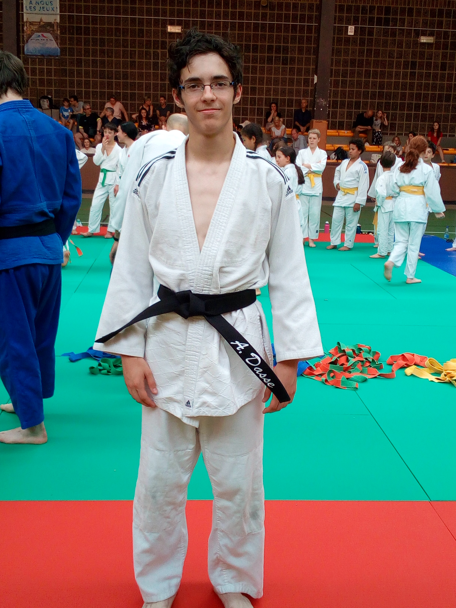
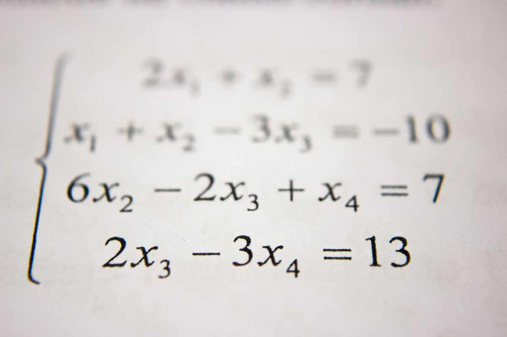

Dans cet page, je vais détailler l'obtention et les efforts fournis pour mon bac ainsi que pour ma ceinture noire de judo.
Ceinture noire de judo
Cela fait de nombreuses années que je pratique le judo, j'ai commencé mes 4 ans, depuis lors, je n'ai jamais arreté. C'est ainsi que j'ai monté en grade chaque année jusqu'à obtenir ma ceinture marron. Pour passer ceinture noire, il faut réussir trois epreuves, une epreuve technique, les katas, une epreuve de combat et une epreuve d'arbitrage. C'est en reussissant ces trois epreuves que j'ai obtenue la ceinture noire un mois avant mes 16 ans.

Ce parcours dont l'aboutissement aura été cette ceinture noire m'aura appris à vivre en respectant le code moral du judo notamment la politesse, le controle de soi et le respect qui sont pour moi des valeurs clés à appliquer afin de s'entendre avec tous le monde.
Bac S spécialité mathématiques
Depuis la sixième, mon college-lycée, les Francs-Bourgeois, nous préparaient à passer les examens sans encombres, du brevet et du bac, après avoir eu la mention très bien au brevet des collèges, je me suis tourné vers mon obtention du bac en esperant avoir la même mention. Pour se faire, j'avais des bacs blancs depuis la seconde et chaque semaine un DST dont la durée de l'épreuve etait basé sur la durée d'une epreuve du bac. Malheureusement, en 2020, avec la covid-19, nous étions dans l'incapacité à pouvoir passer le bac. J'ai donc passer mon bas en étant sur mon lit et je l'ai eu mention assez bien, un peu décu car je penses que j'aurais eu une meilleur mention en passant les epreuves. Cependant, cela n'enlève pas tous les efforts fournis les années précédentes pour obtenir ce bac S..
